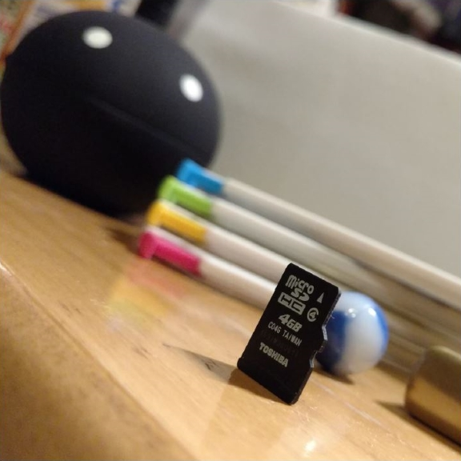

Exercise 6
Scale
Description:
Collect objects that represent the world in miniature, such as figurines, toys, game pieces, or ornaments. Include objects that vary in color, and use the variations in color to affect the sense of scale in your arrangement of the objects
Photograph the objects in a way that changes the viewer's sense of their scale. Try placing the objects in an unusual context or shifting the level of the camera.
